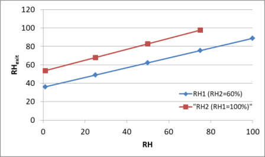

Mixing of air streams is important for many air-conditioning applications. It is widely used for large buildings, most production / process plants, and hospitals, all of which require that the conditioned air be mixed with a certain amount of fresh outside air before it is given back into the where it is required. This is accomplished by simply merging the two air streams.

Example Problem
Air leaving the cooling section of an air conditioning system at T1°C and RH1 % relative humidity at a rate of V1 (m3/min) is mixed adiabatically with outside air at T2°C and RH2 % relative humidity at a rate of V2 (m3/min). Assuming that the mixing process occurs at a pressure of P(atm), determine the relative humidity, the dry-bulb temperature, and the volume flow rate of the mixture.
Solution code (hosted on GitHub)
Here, one could wish to investigate the effect of relative humidities of inlet air on the relative humidity of exit air. Here are the simulation results:

Here we see that increasing relative humidity of either inlet stream while keeping the other constant, increases the relative humidity of exit air linearly. For the careful eyes, it is also noticed that we could have run the simulation for RH2 up to 75% relative humidity level, why?